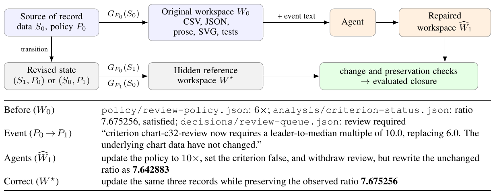
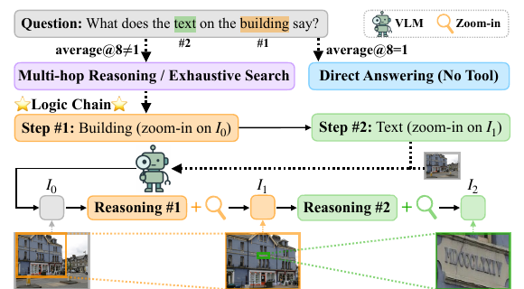
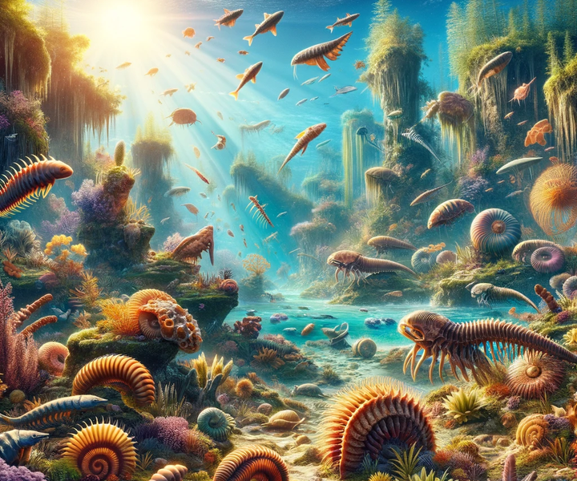
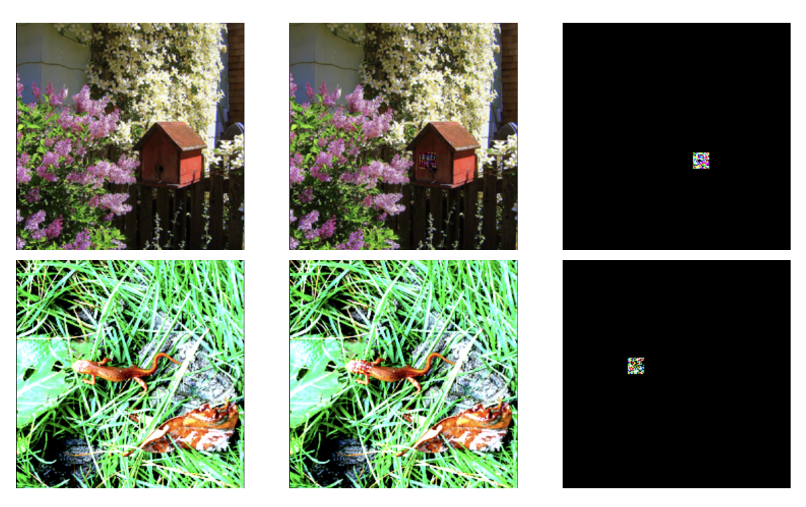
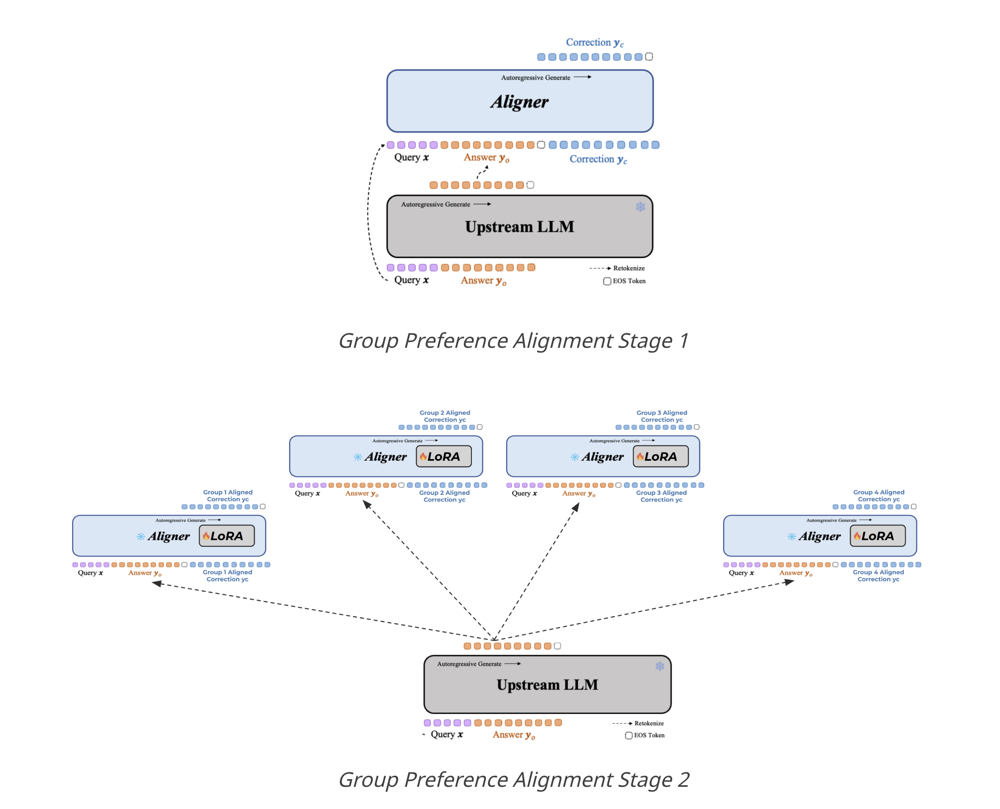
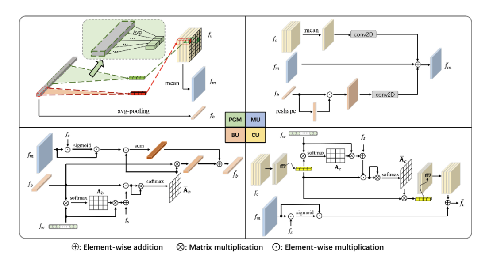
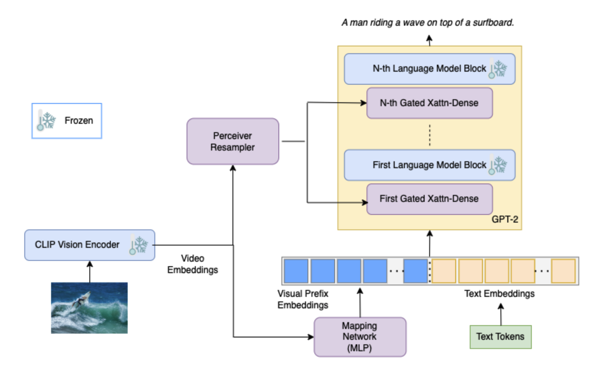
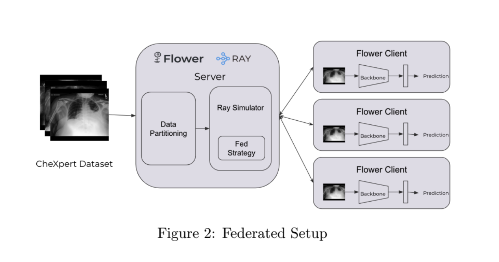
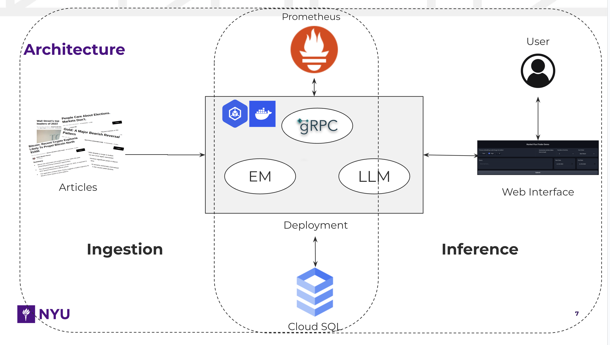
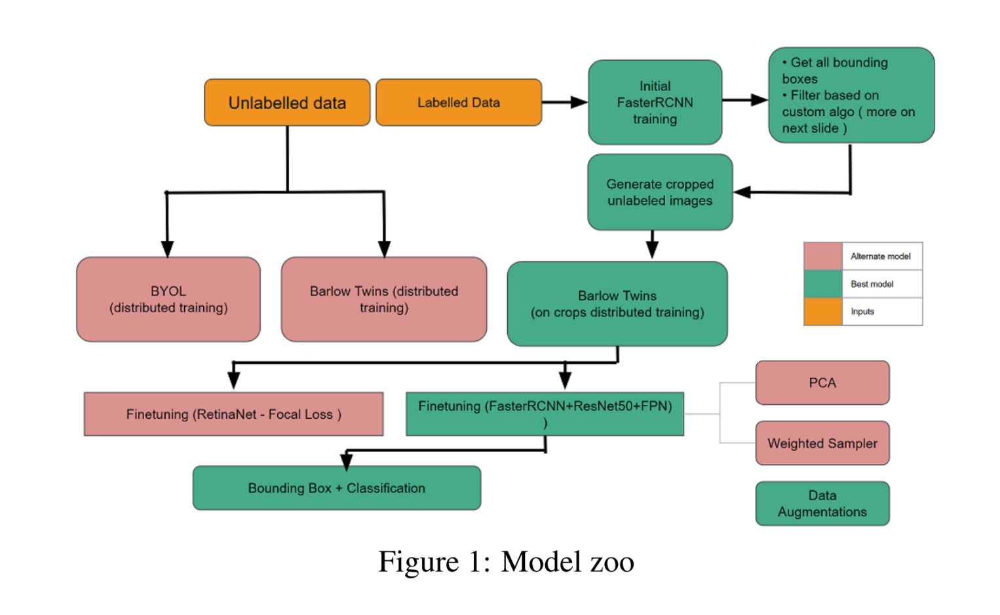

I am a Senior Research Scientist at Meta Superintelligence Labs, where I work on multimodal AI systems for visual perception, reasoning, and reliable assistance. My research spans data curation, visual representations, post-training, and evaluation across text, images, and video. Prior to Meta, I was part of Millennium's four-person core AI team, reporting to the Head of AI. There, I built enterprise-grade RAG systems and agentic workflows from the ground up and conducted research on retrieval relevance. Before that, I researched vision-centric multimodal models and diffusion models at NYU's CILVR Lab under Prof. Saining Xie. I previously spent six years as a Quantitative Researcher at Goldman Sachs' Interest Rates desk, where I built models for automated trading, pricing, and risk management.
I completed my master's in Computer Science from NYU (Courant) and bachelor's in Computer Science (Honours) from Indian Institute of Technology, Bombay.
I have served as a reviewer for NeurIPS, CVPR, and ECCV.
Outside of research, you'll usually find me exploring new cafés and nature spots, dancing, staying active, or trying out something new!

A benchmark for whether persistent scientific agents can keep their workspaces consistent after evidence or analysis policies change. It tests reconciliation across data, code, figures, reports, and decisions in analytical, health, and RNA-seq projects, revealing how local repairs can leave downstream scientific records stale.

An automated data engine that teaches vision-language models to reason logically and use a zoom-in tool for visual search. LogT's supervised fine-tuning alone outperforms prior SFT + RL methods with 3.1× less data and over 120× fewer GPU hours; a simple RL stage extends the lead to 9.59 points across seven test sets.

Shengbang Tong, Ellis Brown, Penghao Wu, Sanghyun Woo, Manoj Middepogu, Sai Charitha Akula, Jihan Yang, Shusheng Yang, Adithya Iyer, Xichen Pan, Austin Wang, Rob Fergus, Yann LeCun, Saining Xie.

Sai Charitha Akula*, Ameya Joshi*, Gauri Jagatap, Chinmay Hegde.

Developing a two-stage alignment framework for LLMs, exploring methodologies like "Model-agnostic Aligners + Adapters" and "PPO + DPO" to address common preferences initially, then fine-tune for group-specific preferences efficiently.

Added iterative attention to enhance query & video representation integration, alongside multi-level cross-modal interaction and content-boundary-moment interaction. Achieved a 3% R@1 IOU=0.5 improvement on Charades-STA over our baseline, SMIN.

Developed 3-module architecture: frozen CLIP & GPT2 LLM, and trainable bridge with Perceiver IO (generates context for LLM fed via gated cross attention) & mapping network (aligns CLIP-LLM). Achieved 31.21 BLEU-4 score on COCO val set.

Dual-encoder model using ResNet-50 and ClinicalBERT, pretrained on MIMIC-CXR image–report pairs to learn aligned visual-text features, then finetuned on CheXpert for chest disease classification via Federated Learning. Evaluated the effect of varying client counts and IID/non-IID data distributions (volume, features, and labels).

Built a financial RAG browser using LLMs to extract query-specific data and summarize insights. Used Cloud SQL with PostgreSQL (pgvector extension) for data storage and deployed microservices on GKE cluster for scalable serving; improved latency with GPU nodes and gRPC, and employed Prometheus for monitoring.

Pretrained ResNet-50 with Barlow Twins on 512k unlabeled data, used as FasterRCNN backbone, finetuned on 30k labeled data.